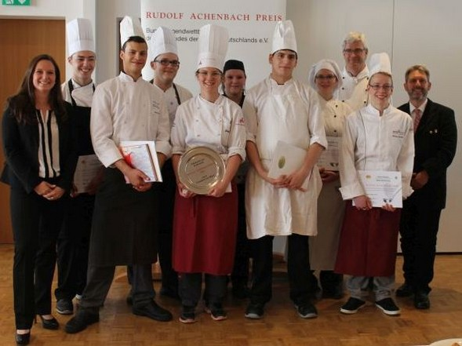
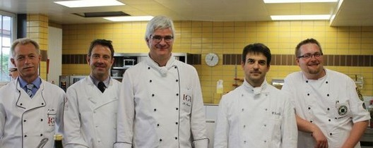
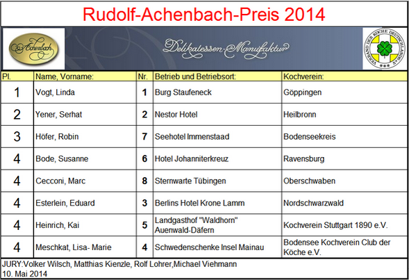

Bild Daniela Wolf
Katrin Moos- Achenbach, Kai Heinrich, Robin Höfer (3. Platz), Marc Cecconi, Linda Vogt (1. Platz), Susanne Bode, Yener Serhat (2. Platz), Lisa Meschkat, Klaus Rexer (Organisation), Eduard Esterlein, Volker Egen LV-BW(v.l.n.r)

Die Jury: Rolf Lohrer, Volker Wilsch, Klaus Rexer, Matthias Kienzle, Michael Viehmann.
Rudolf-Achenbach-Pokal 2014 in Baden-Württemberg
an der Landesberufsschule in Villingen-Schwenningen
Heute haben acht von 13 Auszubildenden, die bereits im Vorfeld eine
theoretische Prüfung abgelegt hatten, ihren praktischen Teil geleistet.
Bei diesem fairen und kollegialen Wettbewerb um die Achenbach-Preis-Fahrkarte
für den finalen Wettbewerb auf Bundesebene haben die jungen angehenden
Köchinnen und Köche sehr gute Arbeit geleistet.
Aus einem vorgegebenen Warenkorb mussten sie ein Viergang-Menü schreiben
und dann in 5 Stunden für 6 Personen kochen.
Vorgegebene Pflichtbestandteile waren für die
Vorspeise: Loup de Mer, Flusskrebse;
Suppe: 2 L. Wildfond, Wildfleisch;
Hauptgang: Hüfte vom Staufenrind, zwölf Stangen weißer Spargel,
Karotten mit Grün, Kartoffeln;
Dessert: Erdbeeren, Quark.
Zudem standen ihnen noch vielerlei Wahlbestandteile zur Verfügung.
1. Platz und Fahrkarte nach Frankfurt Linda Vogt, Burg "Staufeneck"
in Salach für den Zweigverein Göppingen;

Ihr Siegermenü:
Loup & Flusskrebse auf saurem Beet
Kross gebratener Loup de Mer mit Flusskrebsen
auf Mixed Pickles-Gemüse
und Safrannage
Cremiges Wild
Wildrahmsuppe mit Fleisch- und Gemüseeinlage
dazu Knusperblatt
Das Rind aus dem Stauferland
Sous vide gegarte Hüfte
mit Thymianjus
weißer Spargel und glacierte Karotten
dazu Pinienkerngnocchis
Erdbeere mag Quark
Quarkmousse mit Knusperhippe
Erdbeersalat und Erdbeersorbet
_____________________________________________
Sieger waren alle Teilnehmer, weil sie sich dem Wettbewerb gestellt haben.
Gewonnen haben sie an Erfahrung und Routine, somit sind sie gut für die
Abschlussprüfung im Sommer gerüstet.
Wir gratulieren allen Teilnehmerinnen und Teilnehmern
recht herzlich zu ihren Platzierungen.
Wir gratulieren den Ausbildern in den Betrieben und
bedanken uns für die gute Ausbildung.
Die ersten Drei erhalten eine Einladung zur Talentschmiede des Landesverbandes der
Köche Baden-Württemberg, welche wieder in Villingen-Schwenningen stattfindet.
Die Jury waren die bewährten Juroren
Volker Wilsch von der Landesberufsschule Bad Überkingen,
Matthias Kienzle vom Bodensee, Rolf Lohrer Landesberufschule Villingen-Schwenningen,
sowie Michael Viehmann vom Kochverein Stuttgart 1890 e.V. unter der Führung
des Organisators LKlaus Rexer von der Landesberufschule Villingen-Schwenningen.
Frau Katrin Moos-Achenbach sagte den Auszubildenden wie wichtig Fortbildung
durch Tun ist. Dies unterstützt die Firma Achenbach seit 40 Jahren mit der
Ausrichtung des Wettbewerbs um den Achenbach-Preis.
Sie bedankte sich bei den Gästen, Prüfern, dem Service und allen die
auch hinter den Kulissen am Wettbewerb mitgeholfen haben.
Bei der Schulleitung Herrn Direktor Fechteler bedankte sie sich für die Möglichkeit,
den Wettbewerb an der Schule ausrichten zu können.
Sie war erfreut über die gelungene und sehr schöne Veranstaltung.
Als Zeichen der Anerkennung
gab es für die Schule die neu gestaltete Urkunde des Hauses Achenbach.
Unser Landesvorsitzender Volker Egen bedankte sich bei Frau Moos-Achenbach,
bei Klaus Rexer, bei den Teilnehmern und der Jury, bei den Zweigvereinen,
deren Jugendwarte und bei Allen,
die irgendwo und irgendwie für den Wettbewerb tätig waren.
Die Gäste spendeten den Teilnehmerinnen und Teilnehmern viel Beifall für ihre
tolle Arbeit und ihr Engagement.
Mit den besten Wünschen für die kommende Prüfung, die sie alle bestimmt
sehr gut bestehen werden, verabschiedeten wir unsere tollen Nachwuchstalente.
Für ihre persönliche und berufliche Zukunft wünschen wir ihnen alles Gute.
Fotos: M. Viehmann, Daniela Wolf, Bericht HJ Mackes.
Liebe Kolleginnen, liebe Kollegen,
am 10. Mai 2014 fand an der Landesberufsschule in Villingen-Schwenningen der Vorausscheid Baden-Württemberg um den Rudolf-Achenbach-Preis 2014 statt.
Wir gratulieren Linda Vogt, Auszubildende auf der Burg Staufeneck, zum 1. Platz bei der Landesvorausscheidung in Baden-Württemberg.
Für das Finale, am 13. und 14. Juni 2014, in Frankfurt wünschen wir ihr viel Erfolg und die notwendige Prise Glück!
Die Übersicht der Platzierungen entnehmen Sie bitte dem Anhang.
Unter www.achenbach.com finden Sie weitere Informationen.
Ein ganz großes Dankeschön geht an die Familien Achenbach und Moos-Achenbach von der Firma Achenbach Delikatessen Manufaktur. Dieser hochwertige Jugendwettbewerb findet 2014 zum 40. Mal statt. Dies ist im Sinne der Förderung unserer Auszubildenden eine tolle Sache, die wir gemeinsam positiv umsetzen.
Allen Teilnehmerinnen und Teilnehmern danken wir für die Teilnahme und gratulieren zu den guten Ergebnissen.
Für die Zukunft wünschen wir ihnen persönlich und beruflich alles Gute und weiterhin viel Erfolg.
Es würde uns freuen, wenn Sie uns in unserem Fachverband VKD und somit auch den Zweigvereinen erhalten bleiben und diesen aktiv unterstützen. Dankeschön an alle Auszubildenden, die sich in den Zweigvereinen den verschiedensten Wettbewerben gestellt haben!
Den Mitgliedern in den Zweigvereinen ein herzliches Dankeschön für die Durchführung der vereinsinternen Wettbewerbe. Dies ist sicher eine sehr positive Außenwirkung unserer guten und ehrenamtlichen Arbeit!
Danke an die Betreuerinnen und Betreuer aus den Zweigvereinen für die Begleitung der Teilnehmer/ -innen.
Ein großer Dank für eine gute und solide Ausbildung gilt den Ausbilderinnen/Ausbildern in den Betrieben
und den Berufsschullehrerinnen und -lehrern.
Für die Umsetzung der schriftlichen Vorausscheidung, zeitgleich in Villingen und Bad Überkingen,
bedanken wir uns bei Klaus Rexer und Volker Wilsch.
Für die Gastfreundschaft in den Landesberufsschulen und die uneingeschränkte Unterstützung
herzlichen Dank an die Schulleitungen Frau Suhlry - Brandner und Herrn Fechteler.
An Klaus Rexer und sein tolles Team in Küche & Service, sowie an die Jurymitglieder Volker Wilsch, Matthias Kienzle, Rolf Lohrer und Michael Viehmann geht ein weiterer Dank für die sehr gute Durchführung der praktischen Vorausscheidung 2014.
Vielen Dank an alle Gäste, welche der Veranstaltung in Bad Überkingen einen würdigen Rahmen verliehen haben.
Mit freundlichen Grüßen
Volker Egen
Vorsitzender LV-BW & das gesamte Vorstandsteam